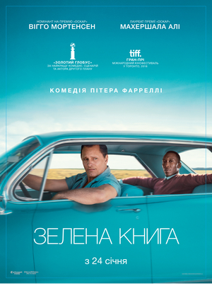

Зелена книга (фільм, 2018)

«Зелена книга» (англ. Green Book) — американський драмедійний біографічний фільм 2018 року, поставлений режисером Пітером
Фарреллі. Фільм розповідає реальну історію подорожі півднем США відомого джазового піаніста і звичайного водія, між якими,
з часом, виникла дружба. Світова прем'єра відбулася 11 вересня 2018 року на 43-му Міжнародному кінофестивалі у Торонто, де
він отримав головний приз «Народний вибір» за найкращий фільм. У січні 2019 року стрічка була номінована на 91-шу премію
«Оскар» Американської кіноакадемії в 5-ти категоріях, з яких у трьох отримала нагороди, в тому числі за найкращий фільм року.
На 15 серпня 2021 року фільм займав 131-у позицію у списку 250 кращих фільмів за версією IMDb.
Сюжет
У 1962 році викидайла італо-американського походження Тоні Валлелонга на прізвисько «Тоні Балакун» (Вігго Мортенсен) наймають
шофером на час туру відомого афроамериканського джазового піаніста Дона Ширлі (Магершала Алі). За угодою, Тоні отримає повний
обсяг гонорару у тому випадку, якщо Дон вчасно прибуде і відіграє усі заплановані концерти. Усі, окрім останнього відбулись,
однак Дон сам вирішив не виступати для публіки, що забороняє йому їсти разом з ними. Абсолютно різні, вони разом подорожують
провінційним півднем США. Дорогою вони користуються так званою «Зеленою книгою негритянського автомобіліста» Віктора Г'юґо
Ґріна, що містить інформацію про безпечні місця для афроамериканців. Ця подорож розкриє їм очі на багато речей, що відбуваються
у світі навколо них.
У ролях
- Вігго Мортенсен … Тоні Валлелонга
- Магершала Алі … Дон Ширлі
- Лінда Карделліні … Долорес
- Дон Старк … Жуль Поделл
- Себастьян Маніскалко … Джонні Венере
- Пі Джей Бірн … продюсер запису
- Браян Степанек … Грем Кінделл
- Ікбал Теба … Аміт
- Том Вірту … Морган Андерсон
- Рікі М'юз … власник бару